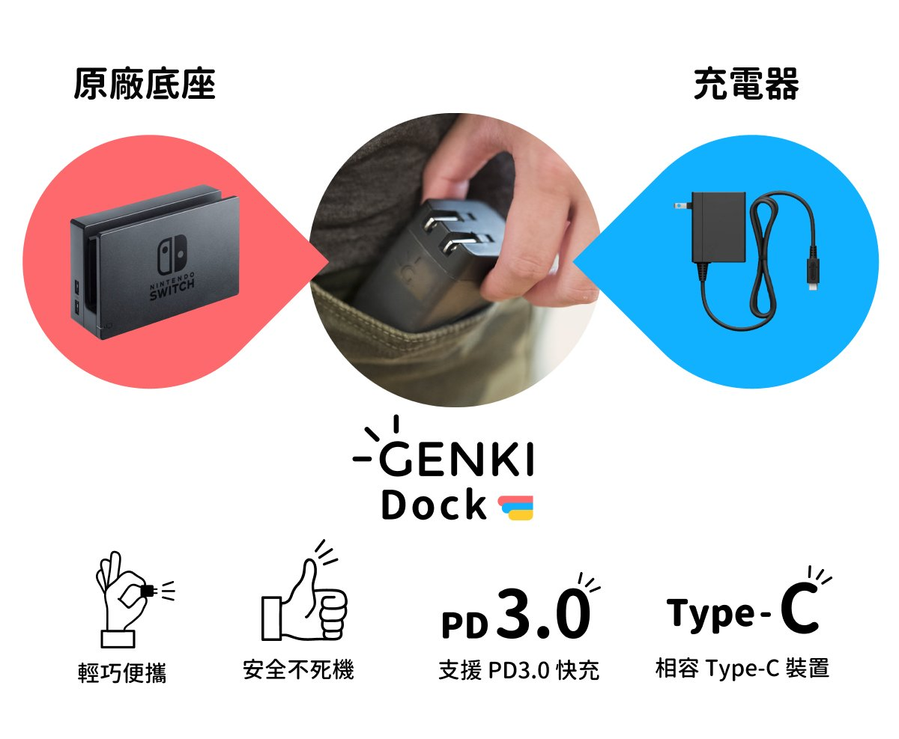
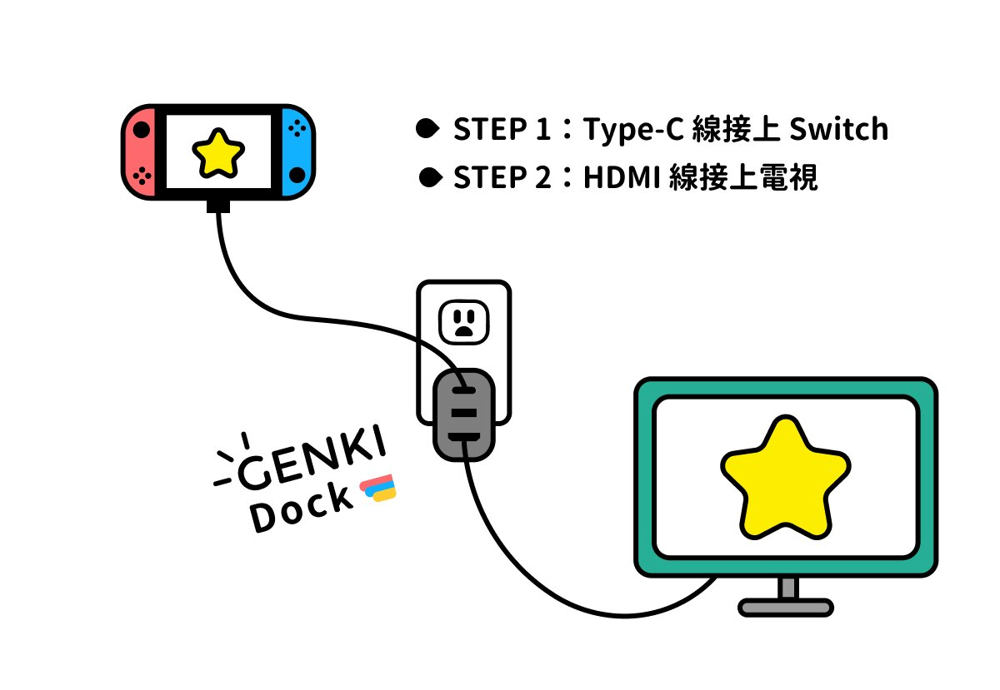
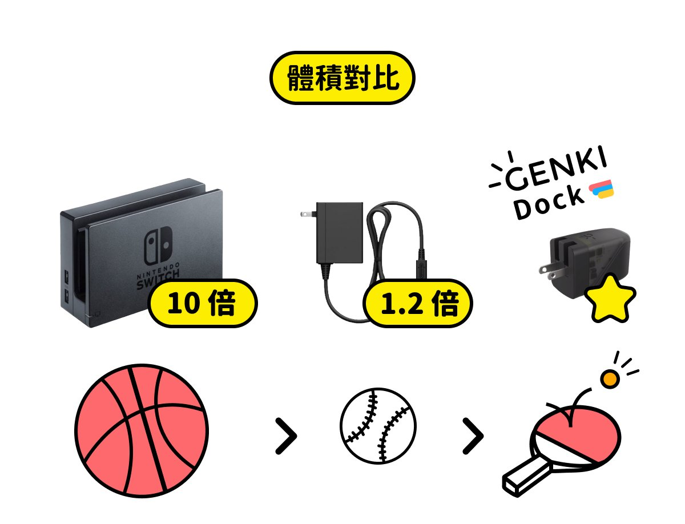
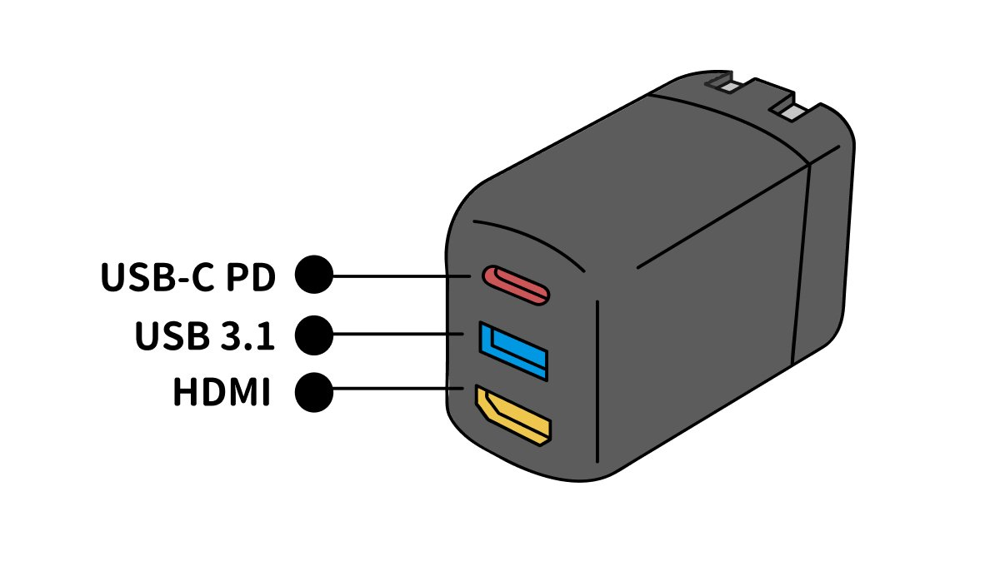
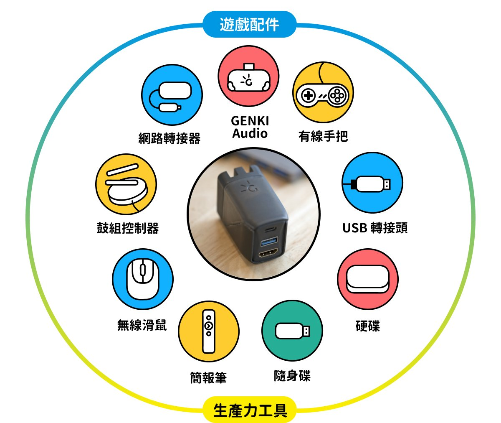

GENKI Dock - 把 Switch TV 模式輕鬆放進你的口袋裡

完美取代你的底座與充電器
Switch 玩家必敗神器，完美取代你的底座與充電器，整合 PD 3.0 快速充電、HDMI 影像傳輸功能，更可相容於 Type-C 裝置。
| 項目 |
內容 |
| 售價 |
$690 |
| 運費 |
$60 |
| 運送方式 |
宅配、超商取貨 |
| 交易方式 |
ATM 轉帳、信用卡、貨到付款 |

身為 Switch 玩家的你，是不是常常和我們一樣感到困擾？想在派對裡和三五好友一起玩《瑪莉歐賽車》和《煮過頭》，但一回頭看到原廠龐大且複雜的底座充電器，就放棄了帶它們出門的念頭…



商品資訊
嗨，各位台灣的玩家你好！我是 GENKI 的創辦人 Eddie，去年 9 月我們在嘖嘖上推出我們的第一款產品 - GENKI Audio 藍牙無線傳輸器，感謝全台超過 5,000 位玩家支持，讓作為遊戲硬體新創的我們，有更多能量開發出更貼近遊戲玩家需求的產品。現在，我們要隆重為你介紹 GENKI 劃時代新品 - GENKI Dock！
身為 Switch 玩家的你，是不是常常和我們一樣感到困擾？想在派對裡和三五好友一起玩《瑪莉歐賽車》和《煮過頭》，但一回頭看到原廠龐大且複雜的底座充電器，就放棄了帶它們出門的念頭…
經過一年多的研究開發後，我們決定採用最新 氮化鎵 GaN 技術，整合 PD 3.0 快速充電 與 HDMI 影像傳輸功能，開發出體積更小、效能更好且相容於 Type-C 裝置的 GENKI Dock。
採用最新 GaN 氮化鎵科技，突破傳統矽半導體技術，實現體積更小、效能更好，讓冷卻器能在小小體積內有效運作，可折疊式插頭的設計巧思，更讓收納時不佔據多餘空間。
僅有 1/10 原廠底座大小，甚至還比原廠充電器小 22%，從此 GENKI Dock 放在口袋，TV 模式隨時帶著走。最上方 USB-C 接孔符合 Switch 充電標準，不像一般充電器僅提供電力，GENKI Dock 還可以傳輸裝置中的數據，並透過 HDMI 輸出影像。
更厲害的是，GENKI Dock 符合 USB-PD 3.0 充電標準，除了 Switch 可用之外，還能為你支援 Type-C 的手機、平板和筆電充電，例如：iPhone XS、Pixel 3、iPad Pro 、MacBooK Air 和 GoPro Hero 7 等等…
商品介紹
影片參考